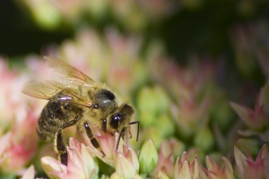

Včela Apis je rod blanokřídlého hmyzu. Charakteristickým projevem rodu včela je stavba díla z vosku vyprodukovaného vlastní voskovou žlázou.
Nadčeleď včely (Apoidea) tvoří celkem sedm čeledí. Z nich šest v sobě zahrnuje samotářské včely druhově velmi rozmanité. Jen na území Česka a na Slovensku žije 609 druhů včel samotářek. Sedmou čeleď představuje čeleď včelovití (Apidae), do níž patří včela medonosná, čmeláci a tropické bezžihadlé včely.

Zpět do menu